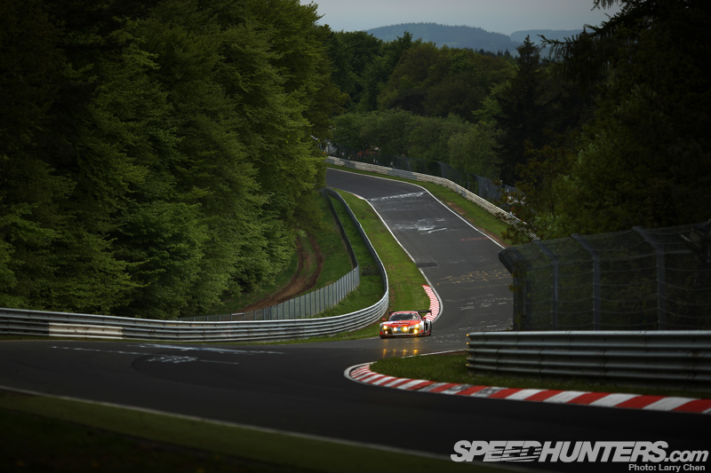
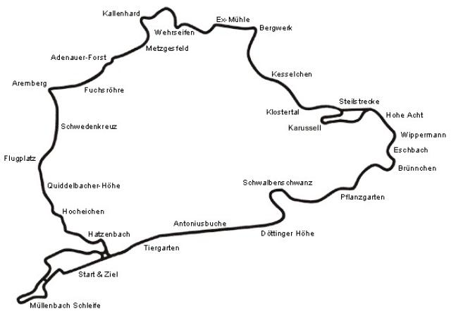

<div class="bg">
  <div class="container">
    <div class="row d-flex justify-content-center">
      <div class="col-8 d-flex justify-content-center py-5">
        <div class="d-flex flex-column align-items-center gradient w-100 p-3">
          <h3>The Green Hell</h3>
          
          <h5>The Story</h5>
          <p>
            The Nürburgring, often referred to as 'The Ring,' is a legendary
            motorsport complex located in the Eifel region of Germany. Its
            history dates back to the early 1920s when it was conceived as a
            challenging and groundbreaking racing circuit. The Nürburgring
            Nordschleife, the most iconic section of the complex, was completed
            in 1927 and quickly gained a reputation as one of the most demanding
            and dangerous racetracks in the world. Over the decades, it has
            witnessed countless historic moments, epic battles, and tragic
            accidents. The track has evolved and undergone several
            modifications, with the modern Nürburgring GP-Strecke (Grand Prix
            Circuit) coexisting alongside the classic Nordschleife. Today, the
            Nürburgring remains a celebrated venue for motorsport enthusiasts,
            hosting various racing events, including Formula 1 races, and
            serving as a testing ground for automakers from around the globe.
            Its rich history and challenging layout continue to attract drivers
            and fans alike, making it a true mecca for motorsport.
          </p>
          
          <h5>The Ultimate Track Experience</h5>
          <p>
            The Nürburgring is renowned for its electrifying features that have
            made it a legendary destination for motorsport enthusiasts
            worldwide. One of its most thrilling aspects is the Nordschleife, a
            20.8-kilometer (12.9-mile) stretch of track known for its
            challenging twists and turns, dramatic elevation changes, and
            daunting 'Green Hell' sections. This undulating circuit offers
            drivers an adrenaline-pumping experience like no other, demanding
            precise skill and nerves of steel. Additionally, the Nürburgring's
            unpredictable weather conditions add an extra layer of excitement,
            with sun, rain, and fog often making each lap a unique challenge.
            The track's rich history is also a source of fascination, having
            witnessed legendary battles and record-breaking feats. Whether it's
            the iconic 'Karussell' corner, the high-speed 'Flugplatz' jump, or
            the unforgiving 'Pflanzgarten' complex, the Nürburgring is a true
            playground for those seeking the ultimate driving thrill. It
            continues to be a proving ground for both professional racers and
            avid enthusiasts, ensuring that its reputation as the 'Green Hell'
            lives on.
          </p>
          
        </div>
      </div>
    </div>
  </div>
</div>
